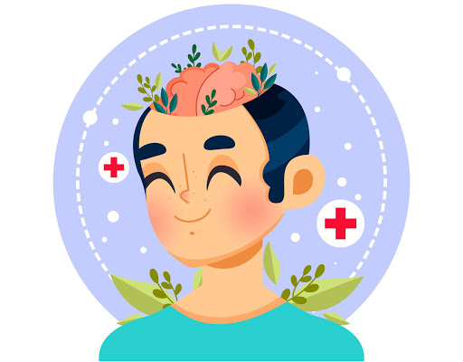

Salud Mental:
Recomendaciones para mantener una buena salud mental
¿Qué es la salud mental?
La salud mental incluye nuestro bienestar emocional, psicológico y social. Afecta la forma en que pensamos, sentimos y actuamos cuando enfrentamos la vida. También ayuda a determinar cómo manejamos el estrés, nos relacionamos con los demás y tomamos decisiones. La salud mental es importante en todas las etapas de la vida, desde la niñez y la adolescencia hasta la edad adulta y la vejez.

El camino hacia una mejor salud mental
Mantener horarios de sueño: Descansar entre 7 y 8 horas diarias, te permite cuidar de tu salud porque mejora el rendimiento físico e intelectual y reduce la probabilidad de que aparezcan algunos problemas físicos y psicológicos. El sueño es un proceso fisiológico que nos ayuda a la restauración metabólica y psíquica, restaurar la memoria, mejorar nuestra capacidad de adaptación, regular nuestras emociones y maduración del sistema nervioso.
Planifica tu día: Organiza las tareas que quieres llevar a cabo durante el día, permitiéndote momentos de descanso y desconexión.
Mantener buena alimentación: Alimentos equilibrados, sin que se te olvide darte un capricho de vez en cuando.
Divertirse: Dedicarte tiempo para realizar alguna actividad placentera, solo o en compañía de otros, te permite mejorar tu estado de ánimo. Si estás contento sabrás gestionar las responsabilidades diarias como laborales o familiares de una forma mejor.
Buscar ayuda cuando sea necesario: Si te encuentras en estas circunstancias, busca ayuda, coméntalo con tus amistades, con personas de confianza, con profesionales. No dejes de cuidar tu salud mental, busca el apoyo necesario y cuídala.
Realiza Ejercicio: La falta de actividad y la nueva rutina en la que nos encontramos puede favorecer la aparición de apatía, anhedonia, aburrimiento, falta de vitalidad… Por ello se aconseja la práctica diaria de ejercicio (30 minutos al día)
